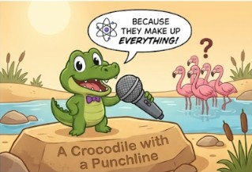
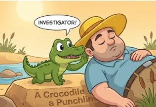
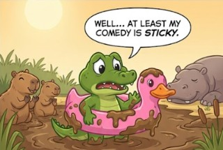
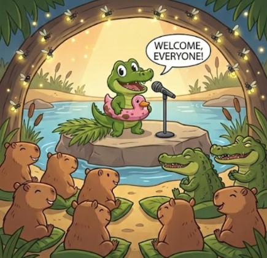

A Crocodile with a Punchline
Once upon a time, a tiny crocodile named Snappy decided he was tired of being scary. While all his big brothers practiced opening their huge jaws and scaring tourists in the swamp, Snappy had a different dream: he wanted to be a professional stand-up comedian.
Every morning, Snappy would stand on a big flat rock and tell his best jokes to the local flamingos. "Why don't scientists trust atoms? Because they make up everything!" he would shout, smiling wide.
The flamingos never laughed. They just stared at him, blinked, and slowly walked away into the water. "Maybe my delivery is too dry," Snappy thought, adjusting his invisible bow tie.
One sunny afternoon, a lost tourist with a big yellow hat sat down right next to Snappy's rock to take a nap. Snappy saw his golden opportunity. He crawled up silently, cleared his throat, and whispered into the man's ear: "What do you call an alligator in a vest? An investigator!"
The tourist woke up, gasped, looked at tiny Snappy trying to hold back a giggle, and burst into uncontrollable laughter. "You're hilarious, little guy!" the man cried, tossing him a piece of sandwich.
From that day on, Snappy didn't bite tourists. He just waited by the riverbank, dropping punchlines for snacks.


The Neon Collar

Once upon a time, Snappy decided he needed a proper stage outfit to look like a true star. He snuck into a nearby campsite and found a bright pink rubber ducky floatie. He squeezed his head right through the middle, wearing it like a giant, neon collar.
Feeling confident, Snappy waddled up to a sleepy hippopotamus lounging in the mud. He cleared his throat and delivered his newest joke: "What do you call a crocodile who loves basketball? A croc-shooter!"
The hippo didn't laugh. Instead, he let out a massive, thunderous yawn that created a giant bubble in the mud. The bubble expanded, flew toward Snappy, and POP!—it covered his shiny pink rubber ducky in thick, brown sludge.
Snappy blinked, looked down at his muddy outfit, and whispered, "Well... at least my comedy is sticky."
A family of capybaras watching from the grass started squeaking with laughter, clapping their tiny paws at his quick comeback. Snappy bowed proudly, ducky and all.
The Stand-up Special
Word about Snappy's hilarious comeback quickly spread through the jungle. The local animals decided to organize a real comedy show at the edge of the river. Capybaras set up palm-leaf seats, and fireflies flew in to provide the spotlight.
Wearing his muddy rubber ducky like a medal of honor, Snappy took the stage. "Welcome, everyone!" he beamed. "Why did the banana go to the doctor? Because it wasn't peeling well!"
The entire audience erupted into laughter—even a group of big, tough crocodiles in the back row couldn't help but chuckle. Snappy wasn't just a comedian anymore; he was the undisputed king of swamp humor.

Quiz Time!
Test your knowledge about Snappy and his adventures!
Back to TopLeave the comment
Table roles
| Name | Role | Reaction to Snappy |
|---|---|---|
| Snappy | stand-up comedian | — |
| Flamingos | audience | didn't laugh |
| Tourist | audience | laughed |
| Hippo | audience | didn't laugh |
| Capybaras | audience | laughed |